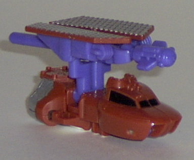
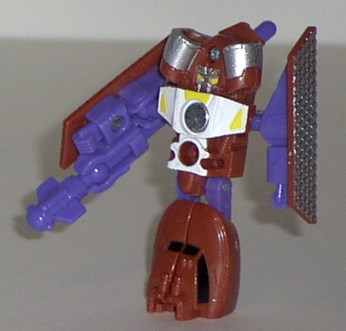
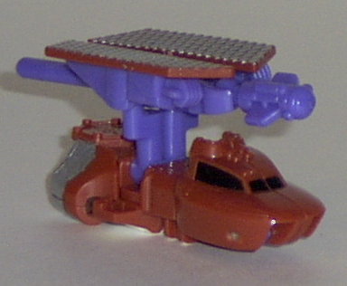
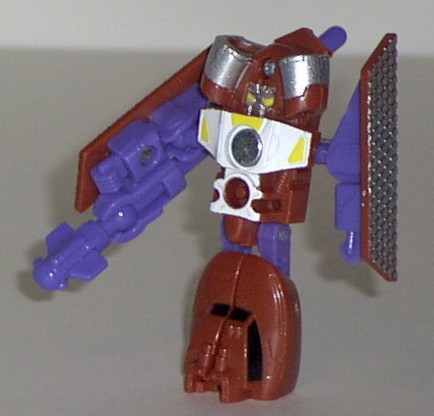

Oceanglide
Oceanglide
 
Difficulty of Transformation : Very Easy
Color Scheme : Metallic reddish brown, purple, metallic silver, and some white, shiny black, and yellow
Individual Rating : 6.0
Sea
Team
Allegiance
: Minicon
Size
: Mini-Con (3-pack)
Team Gimmick
: Ability to each fire
a projectile
Overall Rating
: 7.4
Oceanglide


Difficulty of Transformation
: Very
Easy
Color Scheme
: Metallic reddish brown,
purple, metallic silver, and some white, shiny black, and yellow
Individual Rating
: 6.0
Vehicle mode is some
kind of boat with a solar panel on top, apparently. Anyways, this mode
is pretty nice, at least from a diagonal view. From a straight-on view,
though, the proportions may seem slightly off- the front half of the boat
is a bit "higher" than the back half. The engines in the back are also
a bit too large as well, and the robot hands a bit visible on the underside
of the solar panel, but otherwise this mode is alright. It's magnifically
detailed mold-wise, and the paint job isn't so bad either. (Although I
do think that this color scheme- as with the other Sea Team members- is
a little bit of an odd choice for a boat, although it's not necessarily
BAD...) The coolest part of this mode, though, is that the solar panel
and missile can rotate seperately from the rest of the ship, and you can
also aim the push missile launcher upwards or downwards a bit. The Minicon
port is on the center bottom of this mode, and the Minicon symbol is on
the hexagonal panel on the top rear of the boat.
In robot mode, Oceanglide
still suffers from some proportion problems. The most obvious one is his
head, which is overly wide, and the engines on the side look like some
sort of bizarre giant hair curlers. Yick. The shoulders on his arms are
also oddly pointed and narrow, which I suppose is to help them blend in
with the solar panels that are connected to them, but it still looks odd.
Also, although his legs can move seperately, the feet tend to grind past
each other a bit, since the legs don't have any more space in between them
than they did in the vehicle mode. Oceanglide has so-so articulation- his
shoulders, knees, and hips can move, and that's about the extent of it.
Oceanglide is a very
mediocre Minicon, suffering from some obvious proportions problems in both
modes. As such, he's my least favorite of the Sea Minicon Team.
Stormcloud
Difficulty of Transformation
: Very
Easy
Color Scheme
: Metallic reddish brown,
purple, light gray, and some white, shiny black, and yellow
Individual Rating
:
8.4
Vehicle mode is a boat.
This mode is very nice, with excellent mold and paint detailing and excellent
proportions. He also has no robot extras to speak of, although if you are
really familiar with common Transformer designs, you can kind of make out
the robot feet in this mode- but that's pushing it a bit. In fact, I really
don't have any complaints whatsoever about this mode- it's as perfect as
you can expect an alt mode of this size to get. The push missile launcher
can also move forward and backward, giving it a little extra aiming ability.
The Minicon symbol is on the front hood of the boat on the left side, and
the Minicon port is on the bottom, in the exact center.
Robot mode is also excellent,
with a look that is surprisingly menacing for such a little guy. I especially
like the "scuba mask-ish" face that Stormcloud has, as well as the big
honkin' missle launcher right above it. His shoulders are also pretty big,
giving him a "tough guy" look. His legs are a little skinny, but it's no
really big deal. His articulation is decent- he can move at the shoulders,
elbows, hips, and knees. My only real complaint about this mode is that
I think it would've been nice if the hips were on ball joints, giving Stormcloud
a slightly better range of motion in that area.
Stormcloud is one of
the best Minicons ever, if not THE best. Simply awesome in both modes!
Waterlog
Difficulty of Transformation
: Very
Easy
Color Scheme
: Metallic reddish brown,
purple, light gray, and some shiny black and metallic silver
Individual Rating
: 7.9
Vehicle mode is a sea
hovercraft. This mode is excellent- very nice mold and paint detailing,
and realistic proportions. The robot mode hands are slightly visible on
the sides, but that's about the only complaint I have here. The push missile
launcher is on a ball joint, allowing for horizontal (but not vertical)
aiming. The Minicon symbol is on the very front nose of the hovercraft,
and the Minicon port is on the bottom, slightly to the front of center.
Waterlog's robot mode
is also very good, although it suffers from a couple of slight proportion
problems. For one, the lower legs are so much bigger than the upper legs
that it's a bit disconcerting. (Although I do like how the fans from the
hovercraft mode are used as feet- pretty creative, that.) The head is also
a littie small when compared with the wide, flat chest. I do really like
the actual robot head design, though- the angled visor, the fin on the
head, and the angled mouthplate. The arms are hollow on the inside, but
it's not really that big of a deal- hey, one of them's got a big honkin'
missile launcher on it anyways, right? Waterlog's articulation is above-average
for a Minicon- he can move at the head, shoulders (at two points), hips,
and knees.
Although not quite as
good as Stormcloud (namely because of a couple of proportions problems
in robot mode), Waterlog is still an excellent Minicon, and lots of fun.
The Sea Team is a must-have Minicon Team. Although Oceanglide is admittedly mediocre, Waterlog and Stormcloud more than make up for him with their awesomeness. Like I said, though, the colors, although not bad, are not what I would consider the best choice for a team of boats.
Review by Beastbot